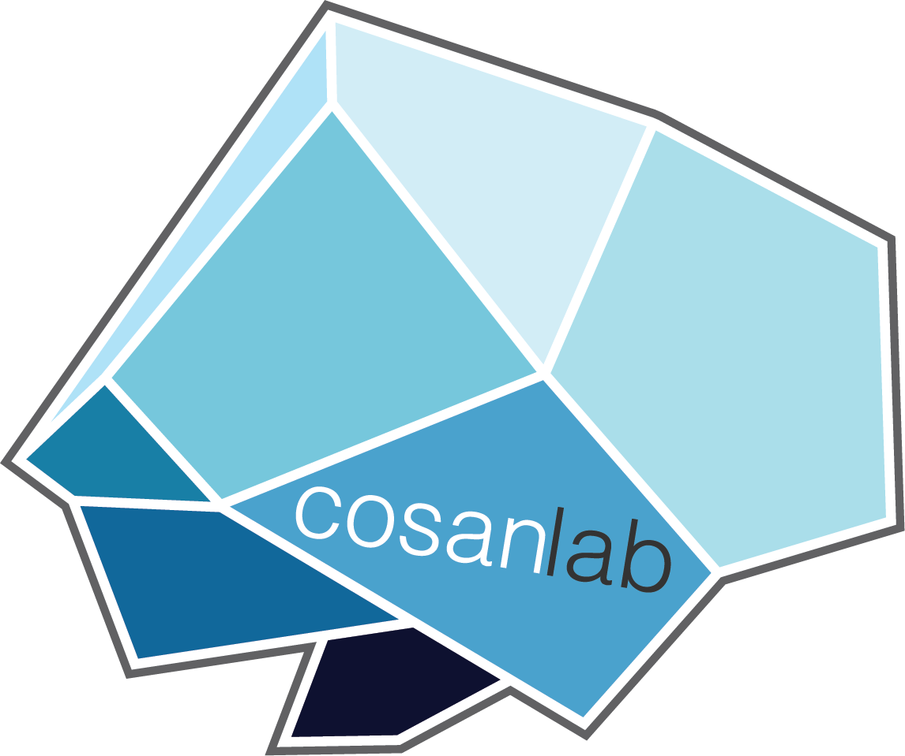

About Me
Wasita Mahaphanit
PhD candidate @ Dartmouth College
I study how we make sense of other people's minds and their shared experiences.
 I am currently a PhD candidate in the Computational Social Affective Neuroscience (COSAN) Lab, where I work with Luke J. Chang and collaborate with Robert Hawkins and Jonathan Phillips. See my research interests page for more details.
 Prior to graduate school, I worked as the lab manager of
Michael J. Frank's
Lab of Neural Computation + Cognition.
My research focused on understanding how humans learn
and make decisions under uncertainty, particularly within the context of
psychiatric disorders and with a specific emphasis on obsessive compulsive disorder (OCD).
Before that, I also worked as an undergraduate research assistant in
Amitai Shenhav's Lab, where I studied performance monitoring and cognitive control
within the context of task-switching.
Prior to graduate school, I worked as the lab manager of
Michael J. Frank's
Lab of Neural Computation + Cognition.
My research focused on understanding how humans learn
and make decisions under uncertainty, particularly within the context of
psychiatric disorders and with a specific emphasis on obsessive compulsive disorder (OCD).
Before that, I also worked as an undergraduate research assistant in
Amitai Shenhav's Lab, where I studied performance monitoring and cognitive control
within the context of task-switching.
I was born in Bangkok, Thailand, grew up in Maine, and then lived in Rhode Island for several years for college and work. Outside of research, I enjoy ruminating while showering, cuddling with my kitty Joji (pictured above), and playing video games (currently obsessed with Baldur's Gate 3 and Persona 5 Royal). In a past life, I practiced aerial hoop/lyra.